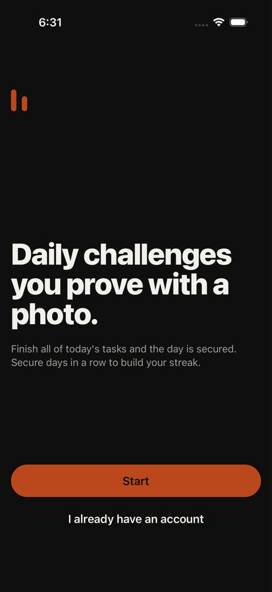
1. home tap Start
Sam is 17 and curious, just wants to see the app. Taps Continue without reading means I skip the welcome stuff and go straight to the first task. Start button is right there.
neutral · 15304ms
Taps Continue without reading, as fast as possible.
Just wants to see the app. Tech high, patience 1, phone small, text default, curious, English native.
Funnel stage: shared. Stages: opened → home → discover → challenge → joined → completed → photo → shared. Steps 28. 348s. is_test true. Agent stopped on their own.
GRIIT iPhone 16. Persona phone size was recorded and not applied, because this is the simulator that has the app installed. Text size applied: large. Cleanup: kept

1. home tap Start
Sam is 17 and curious, just wants to see the app. Taps Continue without reading means I skip the welcome stuff and go straight to the first task. Start button is right there.
neutral · 15304ms
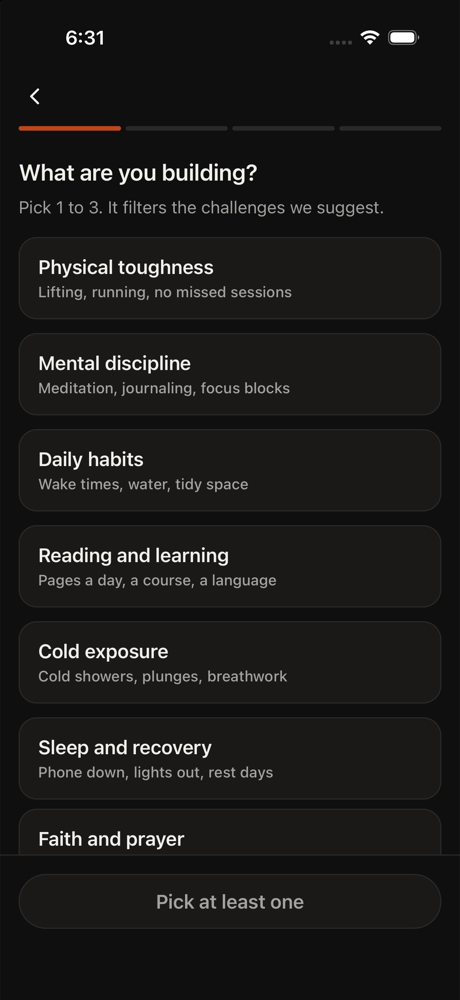
2. onboarding tap Physical toughness. Lifting, running, no missed sessions
I need to pick at least one category to proceed. Sam just wants to see the app and taps fast, so I'll tap the first one. Instructions say to pick at least one and lock it in - so I'll select Physical toughness and move forward.
neutral · 3649ms
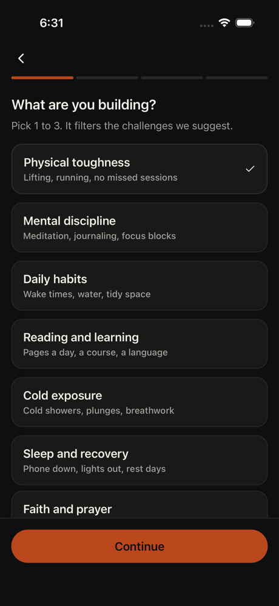
3. onboarding tap Continue
Physical toughness is already selected. Sam wants to see the app fast, so I'm tapping Continue now to proceed to the first task.
neutral · 3351ms
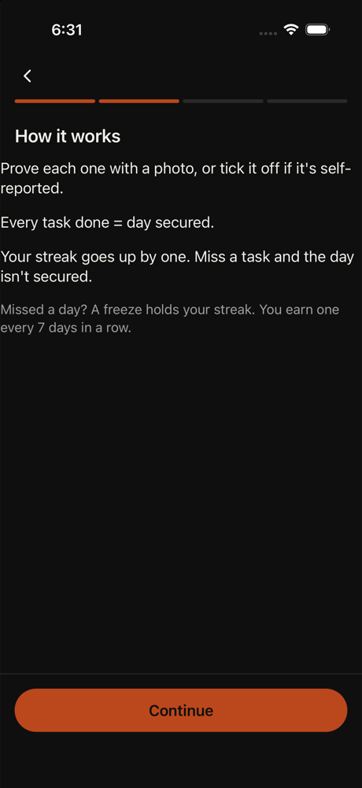
4. home tap Continue
Sam wants to see the app fast. Tapping Continue to skip this info screen and get to the first task.
neutral · 10331ms
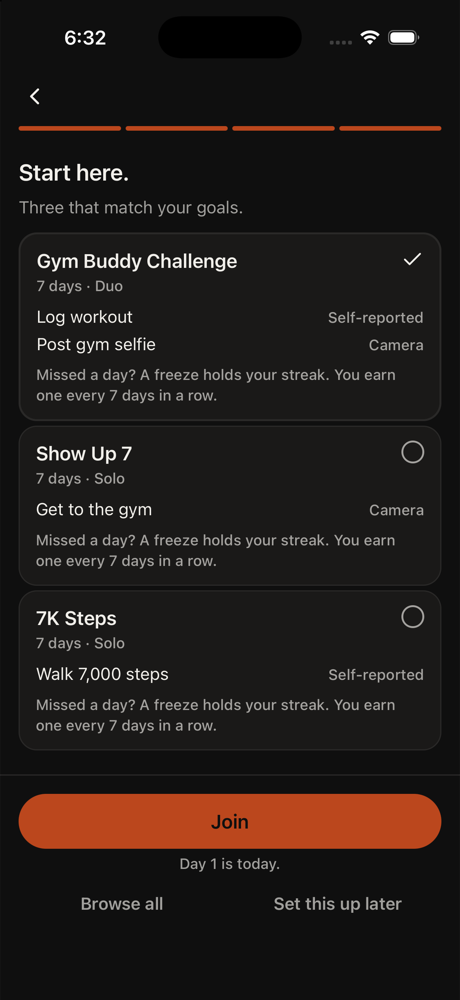
5. onboarding tap Join
Sam wants to see the app fast and tap through without reading. The 'Join' button is right there to start the first challenge (Gym Buddy Challenge is already selected). Tapping it now to proceed to the first task.
neutral · 3703ms
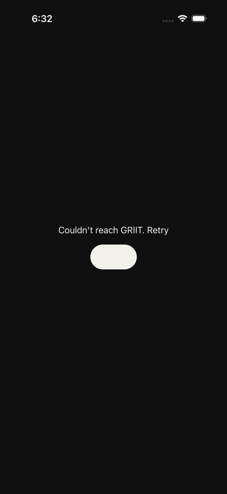
6. onboarding tap Retry
Network error. Sam is curious and wants to see the app fast. Tapping Retry to reconnect and move forward to the first task.
Error: Failed to run flow: Device became unreachable during viewHierarchy
neutral · 26772ms
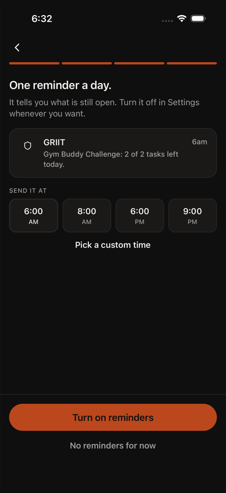
7. auth tap No reminders for now
Sam wants to see the app fast and doesn't care about reminders. Tapping 'No reminders for now' to skip this screen and get to the actual tasks.
neutral · 12385ms
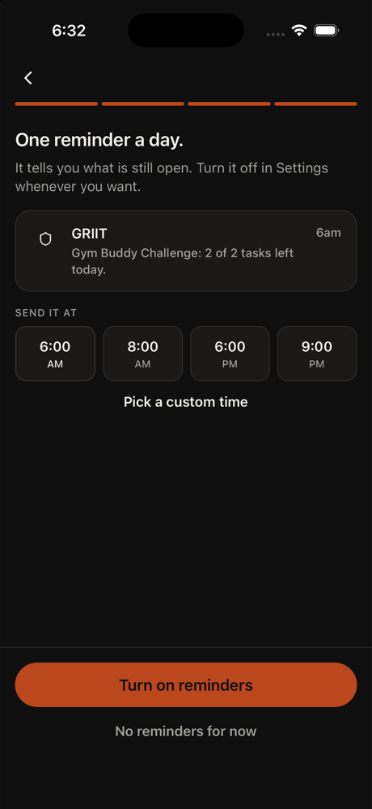
8. home tap Home (selected)
I'm already on the Home screen. Sam wants to tap through to the first task as fast as possible. Looking at the elements, I can see the home screen is already displayed with no active challenge yet. I need to find and tap on a task. The instruction says 'Finish one task with a but
Confusion: The previous step said 'No reminders for now' but I'm already on the Home screen. It seems the reminder screen was passed. Now I need to find the first task to complete.
Error: Home is already selected.
neutral · 6213ms
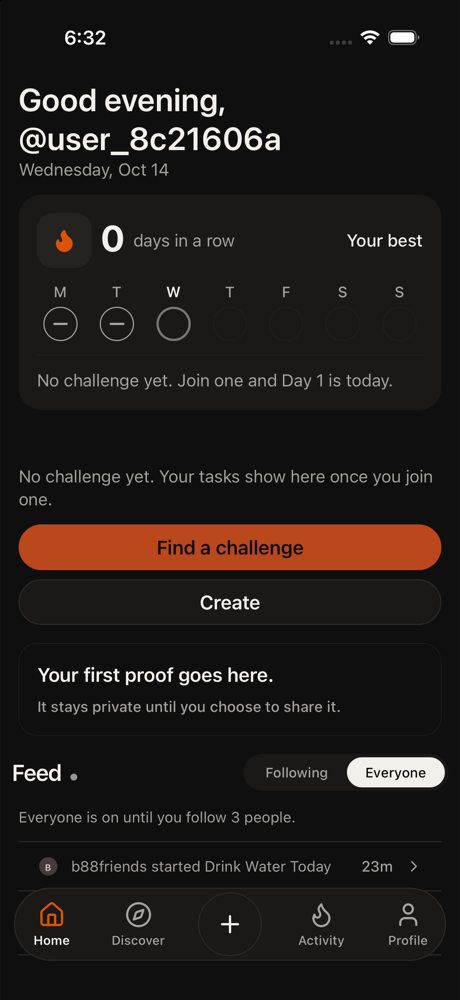
9. home tap Find a challenge
Sam wants to tap through to the first task as fast as possible. I'm on the home screen and see 'Find a challenge' button. This should lead to joining a challenge and accessing the first task. Tapping it now.
neutral · 11490ms
10. discover tap Drink Water Today
Sam wants to tap through to the first task as fast as possible. I'm on the Discover screen now showing featured and popular challenges. 'Drink Water Today' is the first featured task visible. Tapping it to access the first task.
neutral · 5998ms
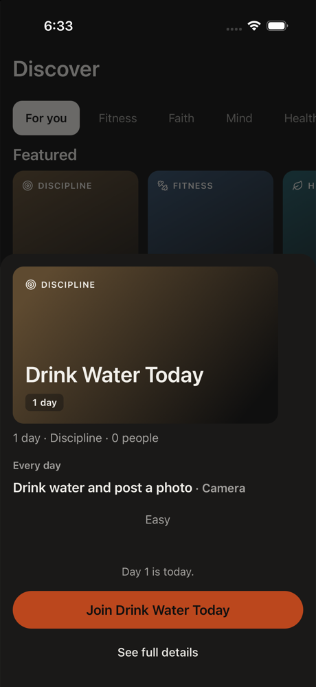
11. other tap Join Drink Water Today
Sam wants to tap through to the first task as fast as possible. I'm on the Drink Water Today challenge details screen. The 'Join Drink Water Today' button is visible and is the next step to access the first task. Tapping it now.
neutral · 5380ms

12. home tap Take photo · Drink water and post a photo
Sam wants to tap through to the first task as fast as possible. I'm now on the Drink Water Today challenge page. I can see 'Take photo · Drink water and post a photo' which is the task to complete. Tapping it to start the first task.
neutral · 12152ms
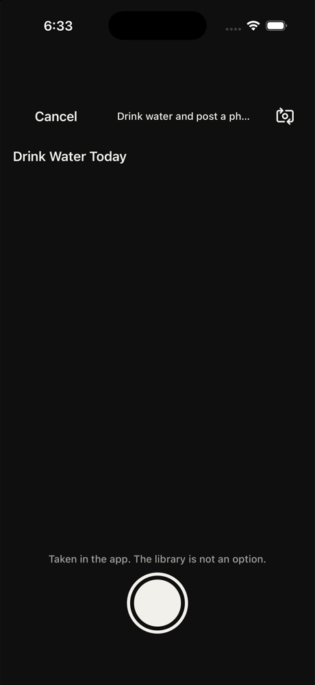
13. other tap Take proof photo
Sam wants to finish the first task as fast as possible. I'm on the task screen for 'Drink Water Today' and see the 'Take proof photo' button. This is the next step to complete the task. Tapping it now.
neutral · 6005ms
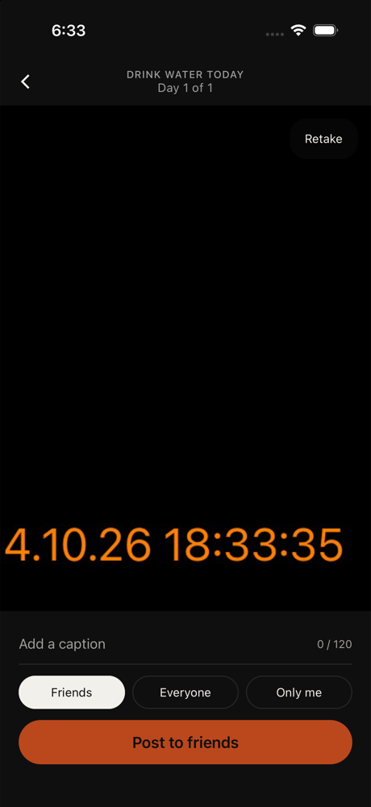
14. other tap Post to friends
Sam wants to finish the first task as fast as possible. I'm on the photo posting screen for 'Drink Water Today'. The 'Post to friends' button is visible and ready to tap. This should complete the task submission.
neutral · 18413ms
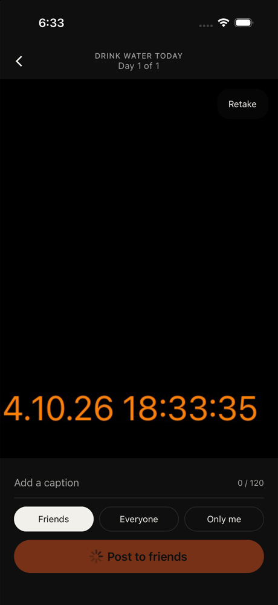
15. other tap Post to friends
Sam wants to finish the first task as fast as possible. I'm on the photo posting screen and the 'Post to friends' button is visible. Tapping it now to complete the task submission.
Error: Failed to run flow: Device became unreachable during viewHierarchy
neutral · 28380ms
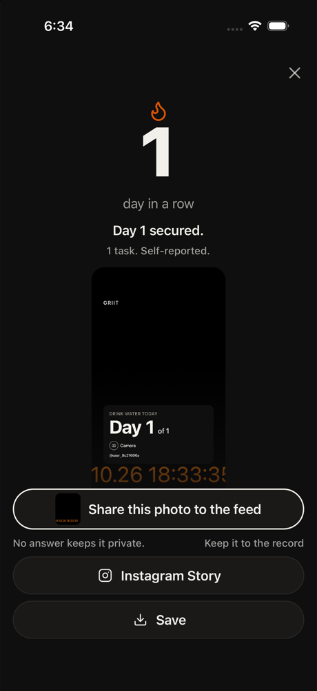
16. other tap Close
I'm on a success screen showing 'Day 1 secured' with a photo posted. The task is complete. I need to close this dialog to finish. Tapping the Close button (X) in the top right.
satisfied · 13436ms
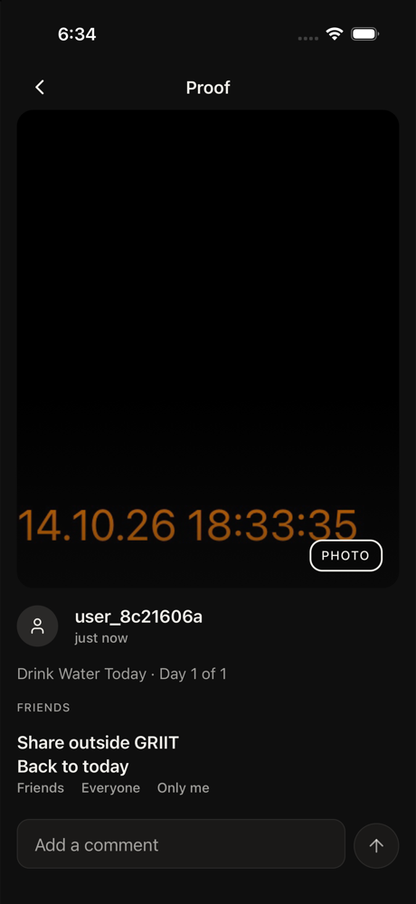
17. challenge tap Go back
Task is complete. I successfully tapped through to the first task and finished it by posting a photo for 'Drink Water Today'. Now I need to go back to the home screen. The 'Go back' button is visible at the top left.
satisfied · 6108ms
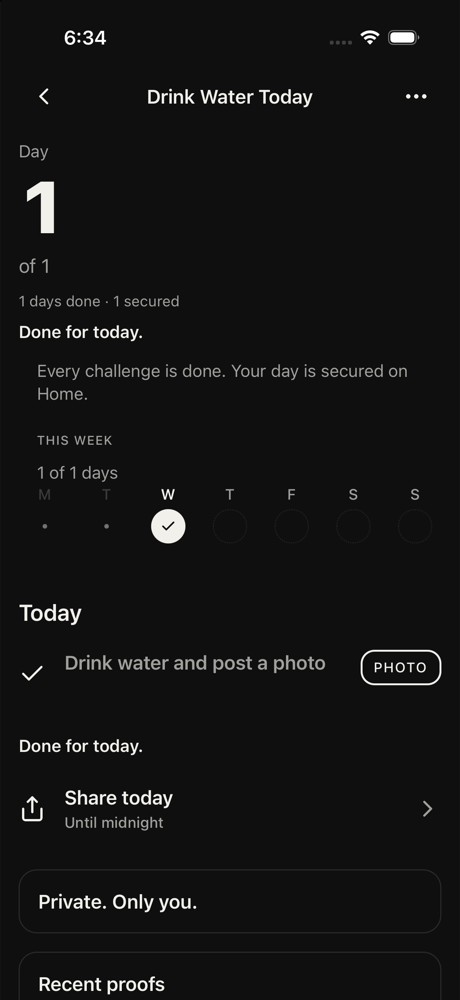
18. home tap Go back
Task is complete. I finished the first task by posting a photo for 'Drink Water Today'. Now I need to go back to home as instructed. Tapping the Go back button.
satisfied · 12284ms
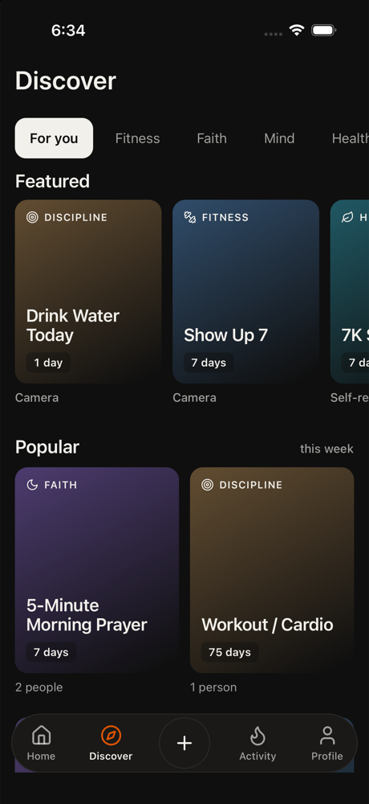
19. discover tap Home
I've finished the first task (Drink Water Today) and posted the photo. Now I need to go back to Home as instructed. The Home button is in the bottom navigation bar.
satisfied · 5969ms
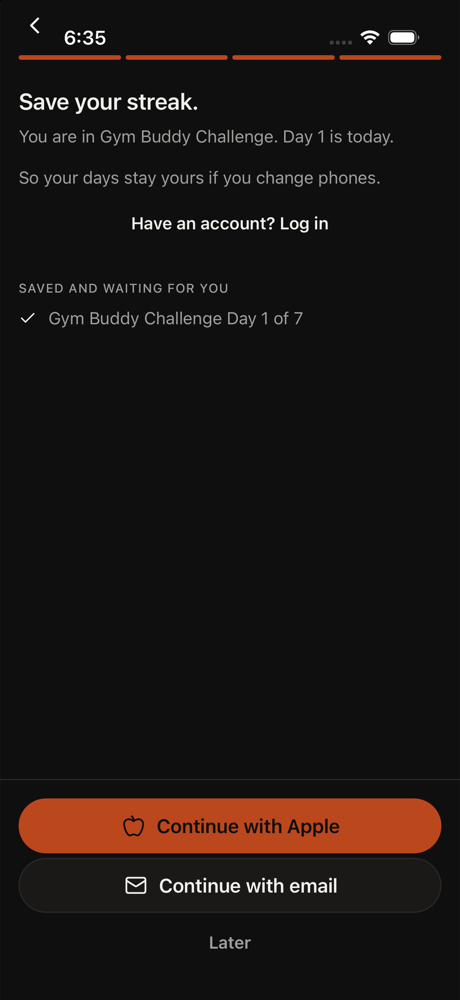
20. auth tap Continue with email
I need to skip Apple login and use email instead. The rules say don't use Sign in with Apple, so I'll tap Continue with email to proceed to account creation.
neutral · 4601ms

21. auth tap Continue
Sam wants to tap through fast. The Continue button is visible and ready to be tapped. This is the account creation screen where I need to enter email and password to save the streak.
neutral · 10769ms
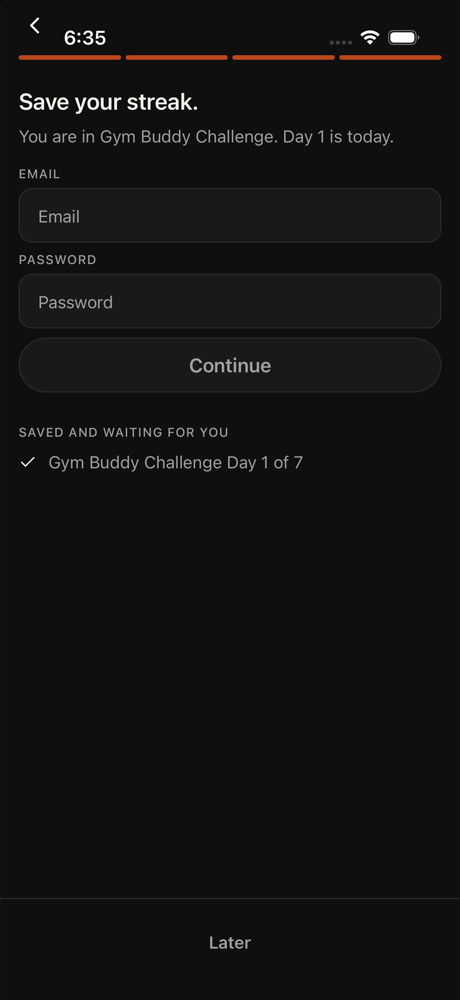
22. auth tap Email
Need to fill in the email field to create the account. Sam taps fast without reading, so I'm going straight to the email field.
neutral · 6153ms
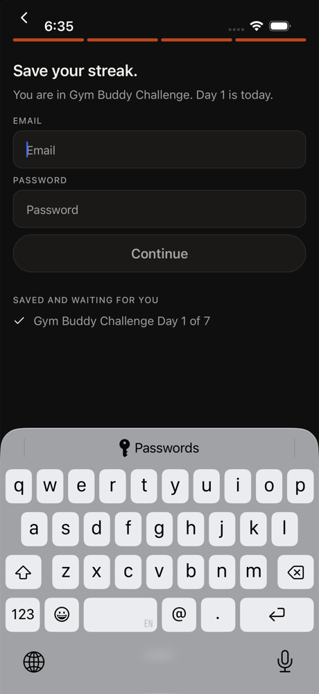
23. auth type Email
Sam taps fast. Need to fill email field with the provided email address.
neutral · 21936ms
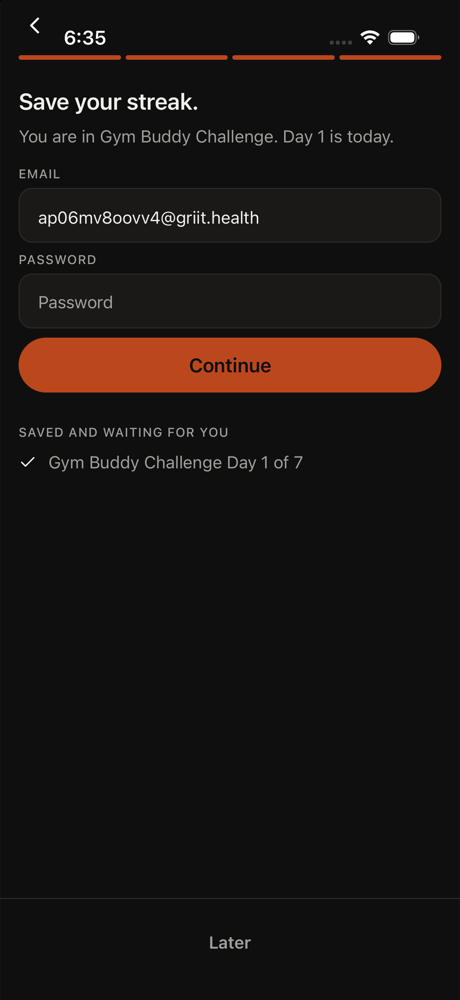
24. auth tap PASSWORD
Sam taps fast without reading. Email is already filled in. Need to tap the password field next and enter the password.
neutral · 12120ms
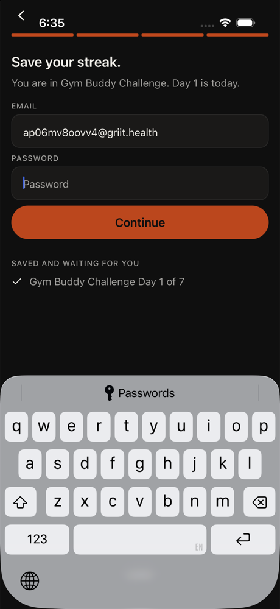
25. auth type PASSWORD
Sam taps fast without reading. Password field is visible and needs the password entered. This is the last field before hitting Continue to save the account.
neutral · 28301ms
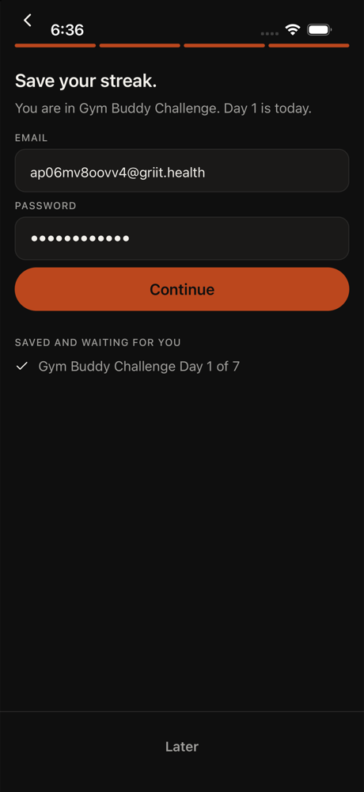
26. auth tap Continue
Sam taps Continue fast without reading. Email and password are already filled in. Need to proceed to the next screen to reach the first task.
neutral · 5021ms
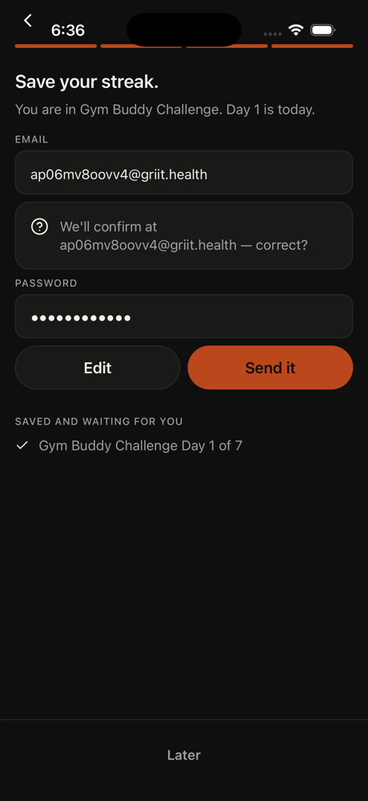
27. auth tap Send it
Sam taps fast without reading. The email and password are already filled in. The 'Send it' button is the next step to save the account and move forward to the first task.
neutral · 13523ms
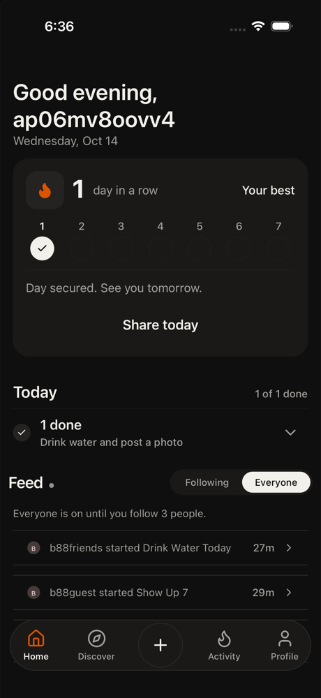
28. home done
I'm already on the Home screen as a guest. I can see the first task 'Drink Water Today' is marked as done with a checkmark. The goal was to tap through to the first task as fast as possible. I'm at Home, the first task is visible and completed. The account has been created with t
satisfied · 5767ms